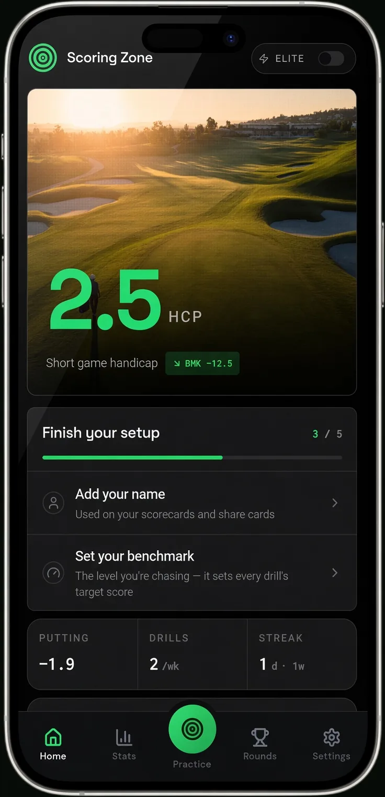
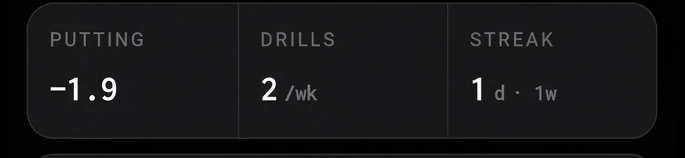
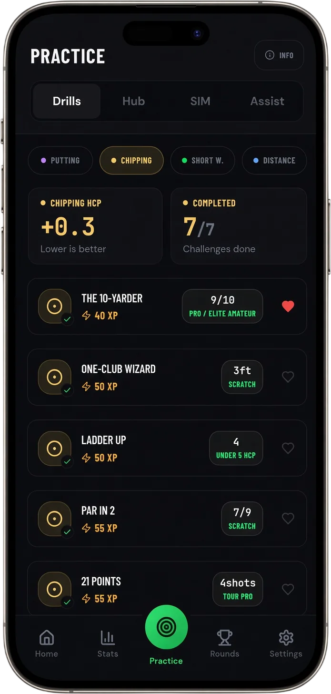
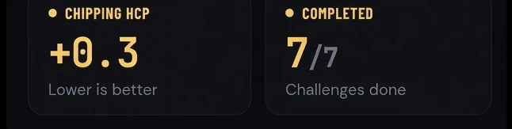

Short Game

How to Stop Thinning Chip Shots: Fix the Skull for Good
The Setup Faults Behind the Skull, and the Drills That Fix It
July 14, 2026 · 7 min read · Stephen Pickering
The Setup Faults Behind the Skull, and the Drills That Fix It
July 14, 2026 · 7 min read · Stephen Pickering
Key takeaway: Thin, skulled chips come from trying to lift the ball and hanging back on your trail foot — both move the swing’s low point behind the ball. Set 60-70% of your weight on your lead side and keep it there, play the ball back with hands forward, and let the loft do the lifting. The towel drill and the Ten Yarder groove crisp, ball-first contact.
Few things sting like a simple chip that comes screaming off the leading edge and races across the green into trouble. If you want to know how to stop thinning chip shots, the first thing to understand is that the skull isn’t bad luck — it’s a predictable result of a couple of setup faults, and both are quick to fix. You don’t need soft hands or a magic move. You need the low point of your swing in the right place.
Thinning and chunking are two sides of the same coin. This guide covers exactly what causes the thin, the setup that prevents it, and two drills that groove crisp, ball-first contact so you can trust your wedge from around the green again.
This is the number one cause. When you try to help the ball into the air with a scooping, flicking motion, your hands throw the clubhead upward before impact. That moves the low point of the swing behind the ball, so the club is already travelling up when it reaches it — and the leading edge catches the ball’s equator instead of sliding under it. The result is the classic screaming skull.
The counterintuitive truth is that you make the ball go up by hitting down. The loft on your wedge is designed to do the lifting. Your job is to deliver the clubhead into the ball on a slightly descending path and let the club work.
The second culprit is weight sitting on your trail foot at impact. When you hang back, the bottom of your swing arc moves backward with your weight, and the club bottoms out behind the ball — leading to either a chunk or a thin depending on timing. Consistent chipping contact starts with your weight favouring your lead side and staying there throughout the shot.
The chunk is the thin’s twin miss, with the same root cause. Here’s the full fix for fat contact.
How to Stop Chunking Chip Shots →Set up with around 60-70% of your weight on your lead foot and leave it there for the whole shot. This single adjustment moves your swing’s low point in front of the ball, which is exactly where it needs to be for a clean, descending strike. Most thin chips vanish the moment a golfer stops shifting their weight backward through impact.
Play the ball slightly back of centre and set your hands ahead of the clubhead so the shaft leans toward the target. This pre-sets a downward angle of attack and takes the scoop out of the equation. From here, the stroke is a simple rock of the shoulders — hands stay quiet, the leading edge stays low, and the club brushes the grass just in front of the ball.
If you’re rebuilding your chipping from the ground up, start with the fundamentals here.
Golf Chipping Technique for Beginners →Lay a small towel on the grass about four inches behind your ball and hit chips without touching it. If you’re bottoming out early — the cause of both fat and thin shots — you’ll clip the towel. This forces your low point forward and gives you instant feedback on every rep. Hit 15 chips and count how many miss the towel and strike ball-first.
Chip 10 balls from just off the green to a hole 10 yards away and count how many finish inside three feet. It sounds like a distance drill, but you can’t get the ball close consistently without clean contact first — so it quietly scores your strike as well as your touch. Scoring Zone builds this exact drill in with automatic scoring, so you get a number to beat each session instead of a vague feeling that it “went better today.”
Want more scored chipping challenges with benchmarks for your handicap?
See Chipping Drills →Thin chips almost always come from trying to lift the ball into the air. That scooping motion moves the low point of your swing behind the ball, so the club is travelling upward and catches the ball’s equator with the leading edge. The fix is to hit down and let the loft of the club do the lifting.
They’re opposite misses with a similar root cause. A chunk hits the ground before the ball (fat), a thin catches the ball above centre with the leading edge and sends it screaming across the green. Both usually stem from an inconsistent low point — often from a scoop or from hanging back on your trail foot.
Set up with your weight favouring your lead foot, the ball slightly back, and your hands ahead of the clubhead, then keep that lead-side pressure through the shot. This puts the low point of the swing in front of the ball so you strike ball-then-turf. A towel drill — placing a towel a few inches behind the ball — trains you to stop hitting the ground early.
You can rehearse the lead-side setup and low-point control on any patch of grass or a mat. Place a coin or tee just behind the ball and practise brushing the grass in front of it. Scored, tracked drills tell you whether your strike is actually improving instead of relying on feel alone.
7 days free
Then from $4.99/month · Cancel anytime
Start your 7-day free trial
35+ drills & tests · Short Game Handicap · Performance tracking



